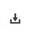

Use the Video Details page to investigate video performance.
The Video Details page is part of the larger collections on the Business Intelligence page. Any time you click the name or title of a video (or any asset), you are shown the Video Details page.
The Video Details page has performance and engagement data for the video.
To export reports on the Video Details page as CSV files, click the download icon. 
- The video section, which contains the key performance indicator (KPI) bar, the video itself, and video information.
- The Segments Watched section, which shows the plays requested count plotted against
the video duration. 1 segment is defined as 2.5% of video length. There could be a
case where your count for video starts is higher than the number of viewers who
watched the entirety of the first segment. Some users may drop off before the first
1/40th of the video completes.
Note: If a user rewinds and watches the same segment N times, Segments Watched for that segment will count as N times.
- The middle panels of Unique Users, Plays, Time Watched, and
Playthrough.
- Unique Users: Graphically shows the number of unique users over time (the date range you set at the top of the page).
- Plays Requested: Graphically shows the number of plays requested over time (the date range you set at the top of the page).
- Hours Watched: Graphically shows the time watched over time in HH:MM:SS format (for the date range you set at the top of the page).
- Playthrough: Shows percentages of completion of playing assets, 25%, 50%, 75%, plotted against the count of plays requested.
- The metric section, which shows information in either graph or list form for the
following information about the video:
- Device: Shows the plays requested, time watched, and playthrough of the devices the video was played on.
- Geography: Shows the plays requested, time watched, and playthrough of the different geographies the video was played in.
- Player: Shows the plays requested, time watched, and playthrough of the different video players the video was played on.
- Traffic Source: Shows the plays requested, time watched, and playthrough of the different traffic sources the video was played through.
Setting a Date Range
With the Select Date Range pull down you can change the date range for the plotted graph and displayed metrics. You can choose from the following options. Please note that a week is defined as Monday - Sunday.
- Today
- Yesterday
- This Week
- Last Week
- Last Business Week
- This Month
- Last Month
- This Year
- Last Year
- Last 12 Months
Time Segments
On the upper right of the chart is a series of buttons you can use to change the granularity (the level of detail) of the displayed data:
The following time segments are available:
- 15 Mins
- Hour
- Day
- Week
- Month
The default time segment is Day.
The default date range for the day time segment is different from the default date range for the 15 minute and hour time segments.
For the day time segment the default date range is from 12:00am of the first day to 11:59pm of the last day in the week (8 24 hour segments). For the 15 minute and hour time segments the default date range is from 12:00pm of the first day to 12:00pm of the last day in the week (7 24 hour segments).
This difference in default date range means that your metric data will change when you switch between the day time segment and the 15 minute or hour time segments. We will change the date range limitation for 15 minute and hour time segments to match the day time range (8 24 hour segments) in an upcoming release.